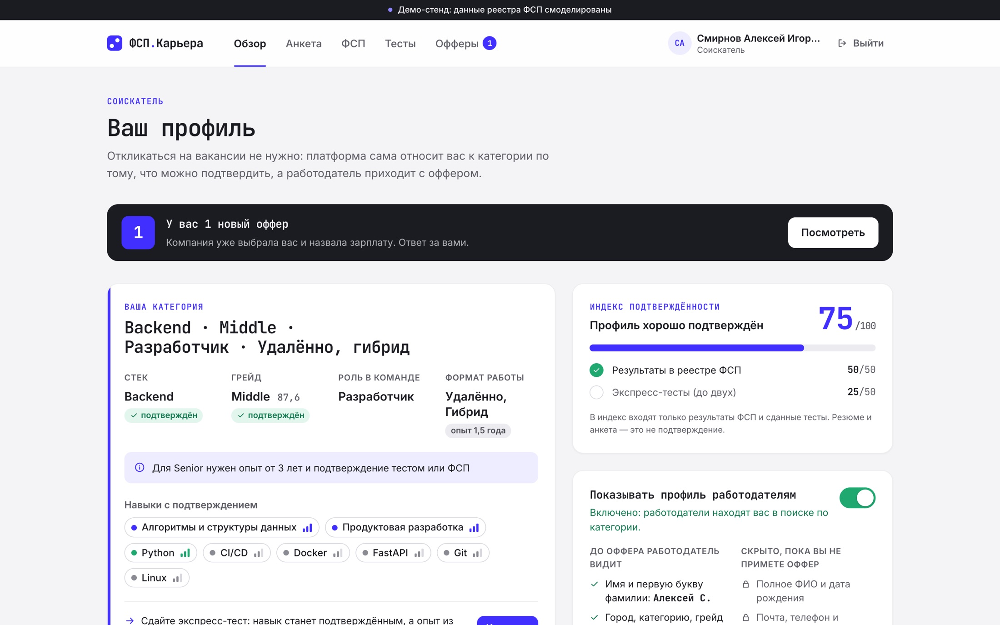
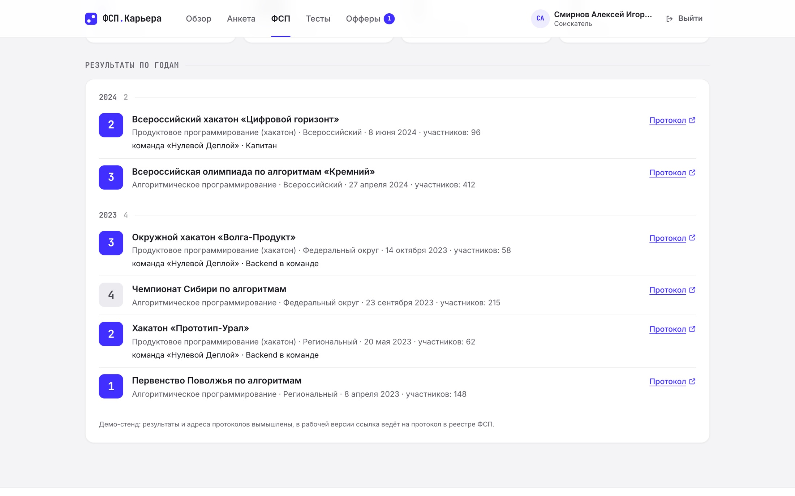
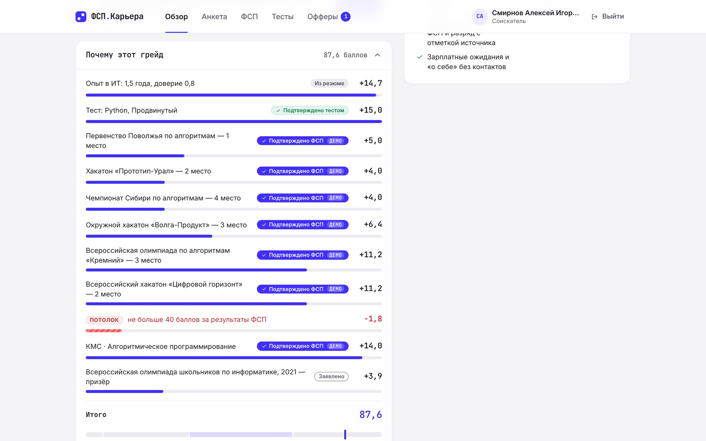
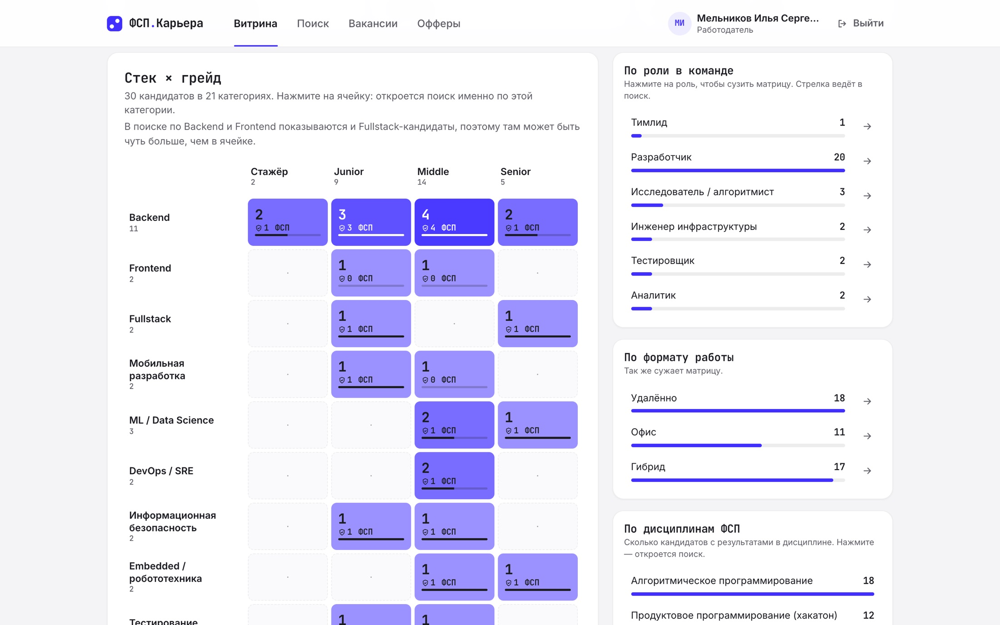
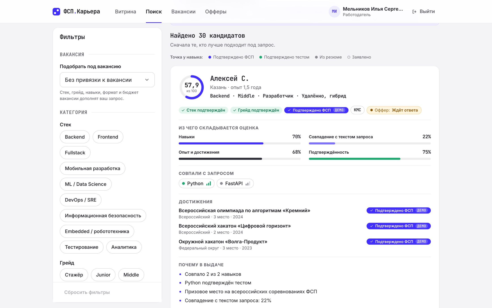
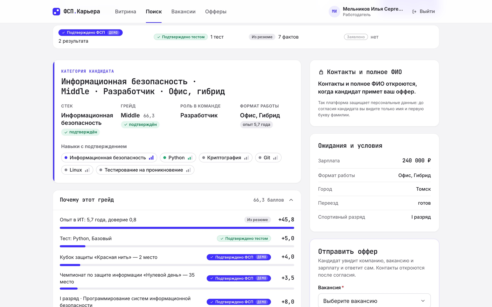

ЛЦТ 2026 · спецтрек Федерации спортивного программирования
Платформа подбора ИТ-специалистов с обратной механикой: категорию кандидата определяет подтверждаемый профиль, а работодатель сам приходит с оффером и зарплатой.
Команда «Граф магистралей»Работающий прототипОткрытый код
Проблема
Решение
01 · СОИСКАТЕЛЬ
Привязывает ФСП ID, загружает резюме, проходит экспресс-тест. У каждого факта — источник и уровень подтверждения.
02 · ПЛАТФОРМА
Сама определяет стек, грейд, роль в команде и формат работы — и показывает, из чего сложился результат.
03 · РАБОТОДАТЕЛЬ
Находит нужную категорию, смотрит, чем подтверждён кандидат, и отправляет оффер с суммой зарплаты.
Объективно подтверждаемый профиль
| Источник | Вес |
|---|---|
| Подтверждено ФСП результаты и разряд из реестра | 100% |
| Подтверждено тестом экспресс-тест платформы | 85% |
| Из резюме навыки и опыт, разбор правилами | 55% |
| Заявлено олимпиады и достижения вручную | 35% |
Неподтверждённое не прячется: стек и грейд без подтверждения помечены прямо в карточке.

Достижения участника ФСП

Объяснимость
Выдуманным резюме грейд не поднять: правило проверено тестами на шести опорных профилях.

Кабинет работодателя

Поиск
| Компонент оценки | Вес |
|---|---|
| Навыки с учётом подтверждения | 45% |
| Совпадение с текстом запроса | 25% |
| Опыт и достижения | 20% |
| Подтверждённость профиля | 10% |
Запрос можно описать текстом: платформа распознаёт в нём навыки, стек и грейд. Сходство с текстом — лексическое, и мы прямо так его называем.

Оффер и приватность
Отдельный тест обходит все ответы работодателю и ищет в них личные данные соискателей.

Архитектура
Интеграция и честные ограничения
Посмотреть самим
| Прототип | __STAND_URL__ |
| Репозиторий | github.com/wrknatul/fsp-career |
| Документация API | __DOCS_URL__ |
| Демо-соискатель | demo.candidate@fsp-career.test |
| Демо-работодатель | demo.employer@fsp-career.test |
| Пароль демо-учёток | demo12345 |
Команда «Граф магистралей»: Максим Лутан, Кирилл Соседов